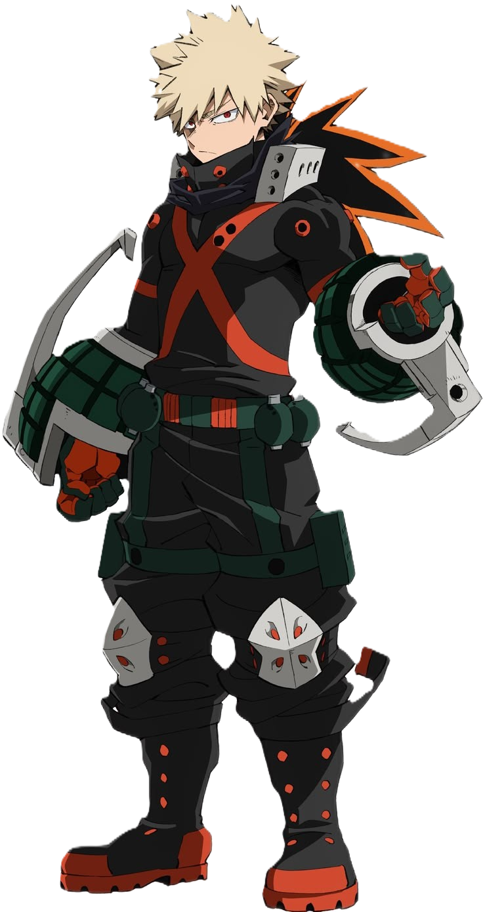

Son Alter
Explosion : il utilise la sueur de ses paumes pour produire des explosions.
My Hero Academia • Dossier de personnage

Explosif, déterminé et toujours prêt à se dépasser : découvre le parcours et les capacités de Bakugo.
Découvrir son profilProjet de fan non officiel. Non affilié aux créateurs de l’œuvre.
Fiche de personnage
Bakugo est un élève déterminé qui veut devenir un grand héros. Sa confiance, son énergie et son envie de progresser font partie de ce qui le rend marquant.
Explosion : il utilise la sueur de ses paumes pour produire des explosions.
Devenir un héros puissant et atteindre le sommet par ses propres efforts.
Fier, compétitif et direct, il ne renonce pas facilement à ses ambitions.
Galerie
Clique sur une photo pour l’agrandir.
Sur écran
Une vidéo de Bakugo.
Données du personnage
Alter
ExplosionAnniversaire
20 avrilTaille
172 cmÀ toi de jouer
Attention : les niveaux difficiles révèlent des moments de l’histoire.
Choisis un niveau, puis clique sur « Commencer ».